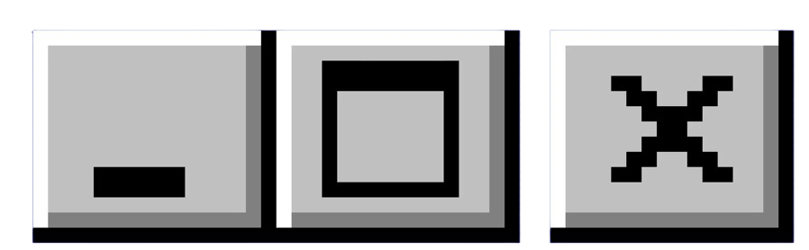

|

|
|
|
|
|
November 23. 2026
|
Unharmed
When did the walls disappear?
was it gradual? or moving to a new country.
Standing behind the counter at the phone service provider,
as he yells in a foreign language
that I am an idiot
for not reading the data contract.
Of going home to a flat where no one knows me.
That showed me that walls are really made of material.
That the stone archway is only constructed
in air.
That I walk up the stairs of great halls,
because someone wanted to impress me.
It was perhaps after the shooting,
that I learned there are no rules
and as the famous author
asks for questions at the front of the room
it seems viable now
to ask if she is still stuck
in the same loop that she writes about.
Perhaps this came from the uncertainty
and control of the body, when you
can suddenly make yourself appear
different as you have always wanted
the physical strongholds
they built to try and convince me
I must go up long stairs,
wait behind large doors for someone
who knows more, to open
them when it is time
to not fall out of gaping windows.
I don't ask my question
and when I approach the table
I say only my name
and she writes it, smiling
and without looking at me.
It is something personal,
to have no walls
though I still act as though
they are there
to not alarm my mother.
|
|
|